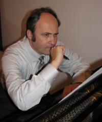
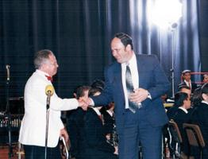

Борис Пиговат, композитор
Борис Зеликович Пиговат — композитор, преподаватель, доктор Бар-Иланского университета (2002 г.), член Союза композиторов Израиля.
«Наиболее важными событиями своей творческой жизни я считаю премьеру
«Холокост-Реквиема» в Киеве в 2001-м году (к 60-й годовщине трагедии
Бабьего Яра) и исполнение этого же сочинения в Новой Зеландии в 2008-м
году в программе концерта «70 лет событий «Хрустальной Ночи» (в память о
событиях, с которых началась трагическая история Холокоста). Также для
меня очень важна премьера «Песен моря» в Карнеги-Холле и исполнение
симфонической картины «Ветер Йемена» такими замечательными духовыми
оркестрами, как Tokyo Kosey Wind Orchestra (2004 год, международный
фестиваль в Токио) и «La Armonica» (Буньоль, Валенсия, 2010 год, концерт
«Mano a mano»). "Моя мечта - создавать музыку до последней минуты моей жизни..."
Персональный сайт композитора, где можно послушать его музыку
Борис Зеликович Пиговат родился 26 октября 1953 года в г. Одесса.
"После того, как меня не приняли в школу имени Столярского (я не повторил точно предложенные мне ритмические рисунки), я поступил в класс скрипки обычной одесской районной муз. школы – ДМШ №4. Но сказать «обычной» было бы неправильно, ибо во главе этой школы стоял совершенно необыкновенный человек – Владимир Данилович Стаховский, великий энтузиаст музыкального образования. При нем в школе был класс композиции, выпускники получали уроки хорового дирижирования (с возможностью продирижировать школьным хором), а сам он организовал особую группу по теории музыки и сольфеджио, куда мне посчастливилось попасть. Там мы получали знания и навыки, соответствующие объему первого курса теоретического отделения музыкального училища. Именно Стаховский убедил моих родителей дать мне возможность попробовать поступить на учебу в Гнесинское музыкальное училище в Москве".
1969-1973 -Московское музыкальное училище им.Гнесиных (теоретико-композиторское отделение.) "В музыкальном училище я прошел прекрасную подготовку. Знания, полученные там, помогли мне в вузе, в Гнесинке, отдавать минимум времени подготовке к занятиям и экзаменам по музыкально-теоретическим дисциплинам и максимально сосредоточиться на композиции, инструментовке (в классе профессора Николая Ивановича Пейко) и полифонии (которая в классе профессора Генриха Ильича Литинского была, фактически, еще одним курсом композиции).
Дополнительным фактором моего музыкального образования в тот период была интенсивная концертная жизнь Москвы. Первые два года в училище я занимался по композиции у Олега Константиновича Эйгеса – прекрасного музыканта, композитора и пианиста (позднее он перестал преподавать). Из сочинений училищного периода сохранились два – это «Маленький Принц» и «Соната-Баллада», которые впоследствии были изданы." 1973—1978 г. — Московский музыкально-педагогический институт им.Гнесиных
(класс композиции, проф.Н.И.Пейко). 1983-1986 г. - Аспирантура при
Московском музыкально-педагогическом институте им.Гнесиных (класс
проф.Н.И.Пейко).
"Однако композитором меня сделали годы учебы в классе Н.И. Пейко. Я счастлив, что судьба даровала мне общение с этим необычайно строгим (иногда даже суровым) и принципиальным учителем. Даже сейчас, во время работы над сочинением, я стараюсь увидеть свою работу его глазами и убрать все лишнее или недостойное.
Если говорить о значительном творческом успехе в период учебы, то это моя кантата «Хатынь» для хора, фортепиано и ударных инструментов. Работа победила на Всесоюзном студенческом композиторском конкурсе. Тогда же произошло еще одно знаменательное для меня событие. Готовя исполнение кантаты силами студентов института, я обратился за содействием к ударникам – ученикам класса Владимира Павловича Штеймана. Так я стал в этом классе «своим человеком», сделал обработки для ансамбля ударных инструментов таких произведений как «Протяжная» К.Лядова и 4-я часть «Испанской Рапсодии» Н. Римского-Корсакова.
Для Володи Калабанова – одного из лучших учеников Штеймана в тот период – я написал пьесу для вибрафона соло, которую потом, как я узнал совершенно случайно, уже, будучи в Израиле, использовали как обязательное произведение на одном из Всероссийских конкурсов. Если бы не эти контакты с классом Штеймана, партии ударных инструментов в моих партитурах выглядели бы по-другому.
Кажется, я был на третьем курсе, когда кафедры композиции и духовых инструментов решили, что студенты-композиторы должны написать небольшие сочинения для духовых инструментов. Я написал одну пьесу для трубы (класс Т.А. Докшицера) и еще одну – для тубы (класс В.Н. Досадина). Так началось мое вхождение в доселе малознакомый мне мир духовых инструментов.
Где эти пьесы сейчас, я не знаю. Тогда не было возможности скопировать, я отдал оригиналы исполнителям, а черновики не сохранил. Может быть, где-то эти ноты лежат – мне было бы интересно на них взглянуть сейчас. А на четвертом курсе я написал одночастный концерт-поэму для саксофона и струнных (плюс три тромбона и туба) и «набрался наглости» попросить исполнить это сочинение известную советскую саксофонистку Маргариту Шапошникову. И, что удивительно, – она согласилась! И прекрасно сыграла, правда, не с оркестром, а с фортепиано".
С 1978 по 1990 год проживает в Душанбе (Таджикистан). Преподает в музыкальном училище, ведет музыкально-теоретические дисциплины, курс композиции, член Союза композиторов Таджикистана. "Как я попал в Таджикистан? Очень просто. Будучи студентом, женился на однокурснице, жительнице Душанбе, и после окончания института им. Гнесиных мы распределились в Таджикистан.
В течение двенадцати лет я там преподавал, работал консультантом в Союзе композиторов, и даже какое-то время – вторым дирижером оркестра народных инструментов Таджикского телевидения и радио.
Что мне как композитору дал этот период жизни? Главное – умение воспринять и прочувствовать закономерности незнакомого для меня музыкального пласта (можно даже сказать, музыкального мира) с тем, чтобы потом преломить эти характерные черты сквозь призму моего собственного стиля. Я думаю, без этого приобретенного мной опыта не было бы таких моих произведений как «Ветер Йемена», «Изгнание», «Из 1001-й ночи» и некоторых других".
С 1990 года в Израиле. В 2002 году Борис Пиговат получает степень доктора Бар-Иланского университета (Израиль). Борис Пиговат - разножанровый композитор, это произведения для симфонического и духового оркестров, вокальная музыка, инструментальные произведения, причем практически для всех инструментов. "Первые два года я провел в кибуце Дафна рядом с ливанской границей. Удивительной красоты место! Там мы учили иврит, там я начал работать на обувной фабрике – отливал резиновые сапоги для конного спорта. Государство дало нам финансовую помощь для проживания, но необходимо было заработать на первый взнос для покупки квартиры. Работать приходилось с 4-х утра до 4-х дня. Вообще-то рабочий день – 8 часов, но сверхурочно платили больше.
После работы я немного отдыхал и приступал к сочинительству. Я не стеснялся того, что работаю не по специальности. И я, и все окружающие прекрасно понимали, что это временный этап в жизни и что я иду обычным путем репатрианта, прежде чем обрету свое место в новом для себя мире. Недаром в Израиле бытует выражение: «Любая работа приносит уважение выполняющему ее». И действительно, через два года я уже начал работать как музыкант, - продолжает свой рассказ Борис Пиговат. - Министерство по делам репатриантов и Министерство культуры разработали специальную программу трудоустройства композиторов из бывшего СССР. Были созданы особые композиторские ставки при израильских детских музыкальных учебных заведениях – консерваториях (не путать с консерваториями в России! Тут, в Израиле, их называют «консерваторион»). Это была должность вроде «composer-in-residence» (в переводе с иврита – «домашний композитор»), и я начал работать таким «домушником» и дирижером струнного оркестра в консерваторионе в маленьком городке Кирьят-Бялик на севере Израиля, рядом с Хайфой.
Продолжаю там работать и сейчас. Этот оркестр – моя творческая лаборатория. Почти все мои сочинения для струнного оркестра были сначала исполнены этими детьми, и лишь потом – профессиональными оркестрами в Израиле и за его пределами.
Сейчас из всей музыки, написанной до приезда в Израиль, я оставляю в общем списке всего 6-7 произведений, которые по своему уровню могут приблизиться к «постсоветским» опусам. Объяснить это иначе, чем общим воздействием новой действительности, иной земли, иной атмосферы, я не могу, так как поначалу, переехав в Израиль, никакого музыкального влияния я не испытывал.
Первые два года, живя в кибуце Дафна, я был оторван от музыкальных центров и коллективов. Тем не менее, даже вещи этих лет уже значительно отличаются от всего, что я писал раньше: словно были сорваны какие-то запоры и высвободились ранее скованные силы.
И судьба у произведений, созданных в Израиле, тоже другая. Я недавно прикинул, что эти сочинения прозвучали более чем в 25 странах – в исполнении как израильских, так и местных музыкантов. У меня ощущение, что эта земля помогает тем, кто ее любит; она раскрепощает человека, выявляет и усиливает его скрытые потенции. Я благодарен Израилю ещё и за то, что именно здесь мною написано произведение, которое я считаю самым важным своим созданием – Реквием «Холокост» для альта и симфонического оркестра (написан в 1995 году).
Аспирантуру я закончил в институте им. Гнесиных – заочно, у Н.И. Пейко в 1983-1986 годах. Завершал «Скорбной музыкой» для симфонического оркестра. А в Израиле я защитил докторскую диссертацию в Бар-Иланском университете, у профессора Андре Хайду. Композиция - оратория «Плач Иеремии». Теоретическое исследование - «Мелодические модели в «Страстях по Луке» К. Пендерецкого».
Все изменилось, когда я познакомился с одним замечательным человеком – дирижером оркестра консерватории израильского города Петах-Тиквы Михаилом Дельманом. Он открыл для меня совершенно новый и удивительный мир современного духового оркестра.
Духовой оркестр консерватории города Петах-Тиква
Я вдруг узнал, что есть замечательные профессиональные коллективы, играющие не только произведения, изначально написанные для этого состава, но уже давно практикующие исполнение блестяще сделанных переложений таких сочинений, как «Море» Дебюсси, 3-я симфония Малера, «Испанское каприччио» Римского-Корсакова, «Ромео и Джульетта» и «Франческа да Римини» Чайковского. Эти партитуры сделаны так, что не ощущается недостатка от отсутствия струнной группы. Тем более что в ряде духовых оркестров, помимо давно узаконенных контрабасов, уже существует и группа виолончелей. Подобные оркестры уже называются по-другому – Symphonic Wind Band, Symphonic Band, Wind Symphony. Я начал фактически заново учиться оркестровать для духового оркестра, а точнее - стал по-другому мыслить для этого состава. Здесь есть огромный потенциал для композитора, тем более что такие оркестры испытывают острую потребность в качественных оригинальных симфонических, подчеркиваю - симфонических по духу, материалу и уровню развития - сочинениях.
Изначально свои произведения я писал для духового оркестра консерватории Петах-Тиквы, где я уже более 10 лет работаю как composer-in-residence. Это молодой, но прекрасный коллектив, с высоким исполнительским уровнем подготовки, и сочинять для него – подлинное удовольствие. Иногда кажется, что эти ребята не знают слова «невозможно». Произведения, которые я писал для них, затем хорошо оценивались профессиональными дирижерами, например, Деннисом Джонсоном, до недавнего времени – председателем WASBE, Всемирного объединения духовых оркестров и ансамблей. Они оценивались по существующей шести балльной шкале как соответствующие уровням 5, 5+ и 6. Для детей это был «этгар» - «вызов», они его принимали и справлялись! А уже потом эти произведения исполнялись профессиональными и университетскими, что близко по уровню, оркестрами Америки, Европы и даже Японии (Tokyo Kosei Wind Orchestra на фестивале ACL в Токио в 2003 году).
Сейчас я тоже стал членом WASBE, контактирую со многими дирижерами и оркестрами. Что же касается детского оркестра из Петах-Тиквы, с которого все началось, то я по-прежнему продолжаю с ним работать, вижу в нём серьёзного партнёра, оркестр осуществляет почти все мои премьеры (за исключением поэмы «Песнь моря», которую я написал по заказу Денниса Джонсона для его концерта в Карнеги-холле, и недавно исполненной им же «Идиллии»). Их исполнение нельзя назвать «детским», а можно только «молодым» - столько души, эмоционального огня и просто старания они в это вкладывают! Оркестром записано четыре диска, на которых звучат и мои сочинения".
"Уже из Израиля я установил очень хорошие творческие контакты с музыкантами из Саратова – профессором класса трубы Саратовской Академии музыки, создателем и бессменным руководителем духового оркестра «Волга-Бэнд» дирижёром Анатолием Селяниным, дирижёрами Аркадием Шуром и Кириллом Ершовым, а также руководителем Brand Brass ансамбля Олегом Абрамовым. «Волга-Бэнд» - прекрасный музыкальный коллектив, обладающий высочайшим исполнительским уровнем. Этот оркестр исполнил почти всё, что мной написано для духового оркестра. А для ансамбля Brand Brass я сделал камерную версию моей оркестровой пьесы «Посвящение Шагалу», которую он играл как в России, так и за рубежом. Мои сочинения исполнялись также в Оренбурге.
Благодаря живущему в Израиле дирижеру Льву Арштейну у меня завязался творческий контакт с очень хорошим коллективом – симфоническим оркестром Белгородской филармонии. Они уже играли мою симфоническую поэму «Восхождение», и я надеюсь на дальнейшее плодотворное сотрудничество".
Из газет:
"В Национальной филармонии Украины прошел вечер
посольств Израиля и Германии, посвященный трагедии Бабьего Яра. На
вечере был исполнен Реквием «Холокост» (2 октября 2001), который написал
израильский композитор Борис Пиговат.
- Наше посольство решило
сделать несколько проектов в области культуры, связанных с этой
печальной датой, — рассказала посол государства Израиль в России Анна
Азари. - Параллельно и не зависимо от нас немецкое посольство тоже
собиралось провести концерт в эти дни. Мы объединили творческие усилия, и
получилась международная акция. Национальный симфонический оркестр
Украины и дирижер Роман Кофман — из Украины, солист-альтист Райнер Мог —
из Германии, Реквием «Холокост» написал израильский композитор Борис
Пиговат, а симфония «Желтые звезды» — детище знаменитого российского
композитора Исаака Шварца.
Борис Пиговат не скрывал своего волнения
оттого, что мировая премьера его произведения состоялась именно в Киеве.
Он рассказал о том, что, когда писал «Реквием», то пережил огромную
внутреннюю боль, которая выплеснулась в музыке. Работа растянулась на
полтора года и шла очень мучительно. К этому примешивались и личные
переживания композитора: ведь в Бабьем Яре – могила его близких
родственников, убитых нацистами 29 сентября 1941 года.
Свое сочинение
он построил по традиционной структуре католической поминальной мессы и в
характере особой Поминальной молитвы («Изкор») памяти 6 000 000
погибших в Холокосте, которая, по еврейской традиции, читается четыре
раза в год. Поэтому Реквием «Холокост», безусловно, относится и к
общеевропейской, и к еврейской религиозной традиции". "Я в своем сочинении постарался напомнить о том, что было. Потому что нет ничего хуже забвения, потому что забвение наказуется повторением, а я не хочу, чтобы это повторилось".
Из газет:
"Реквиему
«Холокост» мы предрекаем большое сценическое будущее! Сочинение Бориса
Пиговата сложное, но без вычурности, и в то же время простое, но без
примитива, сердечное, искреннее — высокого класса!"
Под впечатлением потрясающей игры великого кларнетиста Гиоры Фейдмана Борис Пиговат написал сочинение «Цфат» (премьера в Германии, 2009) – клезмерскую рапсодию для тромбона и духового оркестра; это сочинение было посвящено Фейдману. (Цфат – это город на севере Израиля, где ежегодно проходит фестиваль клезмеров.) Позже была сделана версия для скрипки с оркестром, которая тоже очень понравилась Фейдману, и он захотел ее играть как со струнным оркестром, так и со струнным квартетом. Только он попросил пьесу переименовать – за пределами Израиля не знают, что такое Цфат, и поэтому ее лучше назвать в соответствии с характером музыки – «Еврейская свадьба». Так композитор и сделал.
Многие его произведения звучат в исполнении лучших коллективов мира, среди них: Национальный симфонический оркестр Украины, Израильские симфонические и духовые оркестры, Белгородский симфонический оркестр, Симфонический оркестр республики Таджикистан, Токийский симфонический оркестр (Tokyo Kosei Wind Orchestra), Симфонический оркестр из Новой Зеландии (Vector Wellington Orchestra), Симф. оркестр Ниццы (Франция), симфо-духовые оркестры Испании, Германии, США, Венгрии, России (Волга-Бэнд, Саратов), Государственный духовой оркестр России (дирижер засл. артист Украины А.Уманец) и другие.
Среди многочисленных работ Бориса Пиговата:
Реквием «Холокост», посв. 60-летию трагедии Бабьего Яра. За это произведение композитор получает специальную премию Ассоциации писателей, композиторов и музыкальных издателей Израиля (ACUM-1995г.), и приз премьер-министра государства Израиль(2000 г.)
«Musica Dolorosa» - Для квартета тромбонов (диплом на музыкальном конкурсе композиторов в Будапеште-1988 г.)
«Массада» приз на фестивалях в Люксембурге и Швеции (2003 г.)
«Еврейская рапсодия»-для брас ансамбля (посв. Марку Шагалу)- премьера состоялась на заключительном концерте в Bad Steben (Германия) в исп. Бранд Брасс Ансамбля (Саратов).
«Ветер в Йемене» - премьера в Токио 2003 год,
«Молитва» и «Песни моря» премьера в Нью-Йорке - 2005 год
«Еврейская свадьба» - для кларнета и струнного квартета (исполнил всемирно известный израильский кларнетист-исполнитель клезмерской музыки - Гиора Фейдман) - премьера состоялась в феврале 2009 года, Германия.
«Поэма зари» - для альта с оркестром (исполнила солистка хорватского Симфонического оркестра радио и телевидения Анна Серова, дирижировал Nicola Guerini из Teatro Filarmonico г. Верона) - 7 октября 2013 года в ЗАГРЕБЕ (Хорватия), Lisinski Зал и 10 октября 2013 в ВЕРОНЕ (Италия), Teatro Filarmonico.
Кроме композиторской деятельности Борис Пиговат преподает в нескольких консерваториях Израиля, в частности в муниципальной консерватории г. Петах-Тиква. Ведет курс композиции, пишет музыку для духового и симфонических оркестров консерватории. Источники статьи: Википедия и БОРИС ПИГОВАТ: «ВСЛУШИВАЯСЬ В ЕГО МУЗЫКУ”, очерк Бориса Турчинского
|